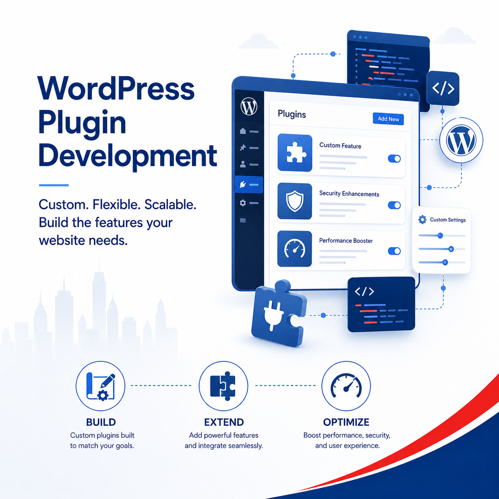

Less compromise
A custom plugin can match your specific workflow, form, calculator, booking flow, portal or internal function.
Add the exact feature your business needs to your existing WordPress website without forcing your workflow into a generic plugin.
Many businesses search plugin marketplaces and compromise because no plugin matches exactly. Axon can help create practical custom plugins faster with AI-assisted development, while still reviewing, testing and implementing properly.

A custom plugin can match your specific workflow, form, calculator, booking flow, portal or internal function.
AI can speed up development, but Axon still plans, structures, reviews, tests and implements the plugin properly.
If your current WordPress website is still usable, Axon can review whether a plugin can be added instead of rebuilding everything.
Collect the exact details your team needs.
Match your service process and staff workflow.
Structure quotation enquiries before follow-up.
Add practical login areas or member functions.
Reduce repeated manual admin steps.
Help users estimate packages or options.
Connect submissions to follow-up tools.
Support payment requests or confirmations.
Give staff a cleaner way to manage activity.
Simplify repeated website updates.
Add bounded AI features with review.
Connect website actions to business processes.
Marketplace plugins are quick to install, but may include unnecessary features, recurring fees, speed issues or workflow compromises.
A custom plugin can be cleaner, easier for staff to use, matched to your process and improved over time.
Axon clarifies the business process before writing or installing code.
Plugins need testing, backup, compatibility review and a careful deployment process.
Axon can advise whether a custom plugin, existing plugin or website revamp is the best option.
Yes. Axon can review whether your current theme, hosting and plugin setup can support it safely.
It depends. Custom is useful when the workflow is specific and marketplace plugins force too many compromises.
AI can speed up parts of development, but professional review is still needed for business use.
Axon checks compatibility before implementation and flags risks early.
Yes, depending on the tools involved and the safest available integration method.
Not always. A custom plugin may be added if the existing WordPress site is stable and usable.